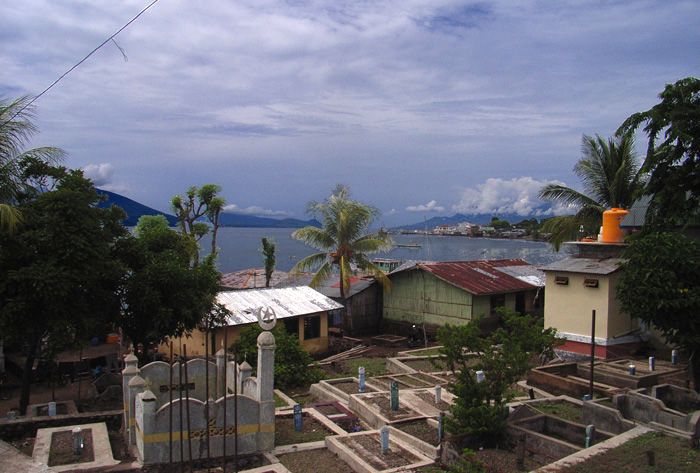
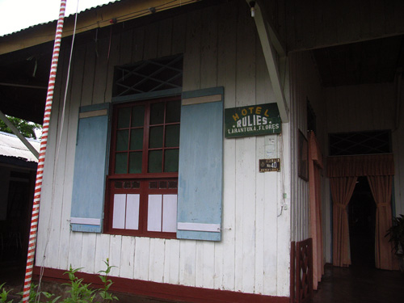
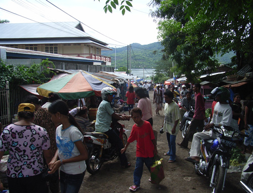
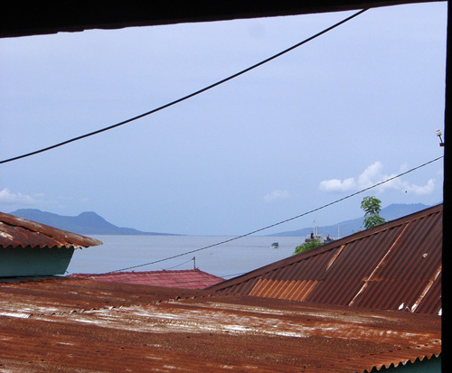
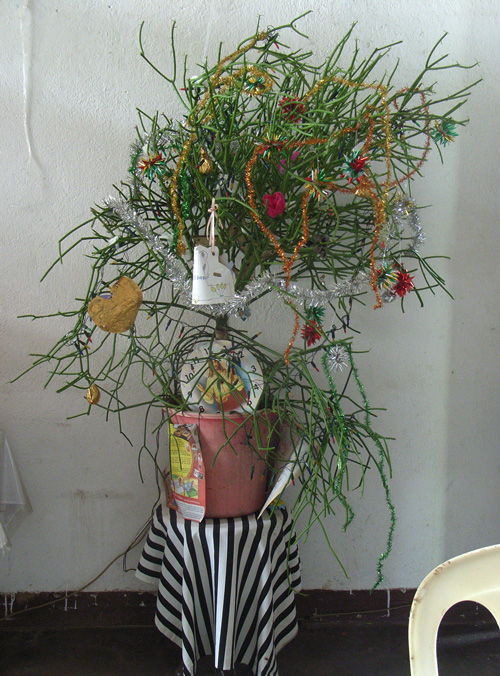

Indonesia Trav-E-Logs ©
Larantuka, Flores
|  | |
| back: Waiterang | |
================================= Hope you all had a safe Holiday Celebration, and have started a wonderful New Year. The New Year greeted me at this small town on the eastern end of Flores. The dominate religion in this part of Indonesia has been Catholic for well over 400 years, so everyone assumes all westerners are Christian. =================================
January, 2007
|
Upon arrival in Larantuka, tried to go to the Hotel Fortuna III as "it has the newest rooms" according to the guidebook. Only problem was it did not exist, and no one had ever heard of it. Ended up at the Riles Hotel, where the lady apologized that the doorknob and lock did not work on the only room still available. The room was actually a triple, with two tables, clothes rack, and very large windows with functioning shutters, so I set my pack down and began examining the French door. Within minutes, she returns with some meager tools -- and a new, higher quality lock set -- but for door with out-swing in stead of in-swing. Several modifications later, the 90-year old door had a fancy new doorknob, and reasonable security for the next few days. While walking back from market, decided to stop and talk briefly to a friendly shop owner on the main road. The view of the straits and island of Solor beyond through a side window in his shop was astounding. Suddenly a huge splash erupted, some 3 or 4 kilometers from where I stood -- and surmise it must have been a whale breaching! Apparently this is not uncommon in these waters as the straits run between the cooler waters of the Sawu Sea to the south and the Flores Sea to the north. A few minutes later it happened again, but not as dramatic as the first. A couple from Kupang was also staying at the guesthouse for New Years, visiting family in the area. Talking to them and the guesthouse owner's brother about 7 PM New Year's eve, the question of what happens New Year's Eve came up. The brother said things were quite because of all the rain -- but decided to go and buy a fish to celebrate. Half an hour later he returns with a huge, half-frozen fish. Into a plastic wash tub it goes, and is defrosted with rainwater pouring off the roof. When he served it about 10:30 PM it was delicious and juicy, unlike the fish often served in eating establishments in this part of the world. The rain stopped again about 11 PM, and the noise began -- first it was firecrackers, then a few fireworks. Then every Evil Knivel want-to-be went racing around town on his motorbike, muffler removed. This continued until about 2 AM, when I hit the sack. The place was like a ghost town January 1st, so much time was spent on the laptop. Took a walk in the early evening and ran into the Dutch/Irish couple from the Sunset Huts. They invited me on a one-day road trip, leaving mid-morning on the 2nd. When their driver never showed up the next morning, they decided to continue their journey by taking the boat to Adonara Island. I did an Ojek loop of the area, learning more about painted bamboo panels, which is now posted in the Bamboo Homes Special Topic, Open in new window. Then headed to the island of Solor the following day. Photos, from top right: Closed these functioning shutters on my room each night; Larantuka's Market; Huge Splash View; Holiday Tree. Enjoy! Bill |
    |
------------------------------
Email me at: "juno.com" preceded by an "@" and "dancer2SEAsia"
"The backpacker discovers people are beautiful everywhere. It's the Governments that are evil."
| next: Solor |
| back: Waiterang |